In this project, I secured a Flask web application by implementing a complete authentication system with password hashing and form validation. I built a registration and login interface that demonstrates industry-standard security practices, including input validation, secure password storage, and proper HTTP method handling for sensitive data.
I established the foundation for a secure authentication system by importing and integrating several critical Flask extensions and Python libraries:
Flask — The core web framework providing routing, request handling, and templating capabilities.
Flask-Bootstrap — I integrated Bootstrap for responsive UI design, ensuring the application works seamlessly across devices without building CSS from scratch.
Flask-WTF — This extension allowed me to leverage WTForms for robust form handling with built-in CSRF protection.
WTForms — A flexible form library that I used to define structured form classes with automatic HTML rendering.
WTForms.validators — I implemented multiple validators (InputRequired, Email, Length) to validate user input on the server side, preventing invalid or malicious data from entering the system.
Flask-SQLAlchemy — I integrated SQLAlchemy ORM to manage database connections and user records in a Pythonic way.
Werkzeug.security — This utility module provided the password hashing functions I relied on to securely store passwords using cryptographic algorithms.
Flask-Login — I used this extension for session management and route protection, enabling me to control access to specific parts of the application.
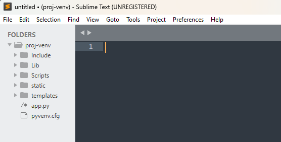
The application secret key is critical for session security. I implemented a best practice by using Python's secrets module to generate a cryptographically secure random key:
import secrets
app = Flask(__name__)
app.config['SECRET_KEY'] = secrets.token_hex(16)
Using a random secret key provides three key security benefits:
I created a LoginForm with specific validation rules:
validators=[InputRequired(), Length(min=8, max=80)]
for the password field, ensuring passwords are present and meet minimum security requirements.
For the registration form, I implemented more comprehensive validation:
validators=[InputRequired(), Length(min=4, max=15)] — Enforces a reasonable length for usernamesvalidators=[InputRequired(), Email(message='Invalid Email'), Length(max=50)] — Validates email format and prevents excessively long email addressesvalidators=[InputRequired(), Length(min=8, max=80)] — Maintains password security requirements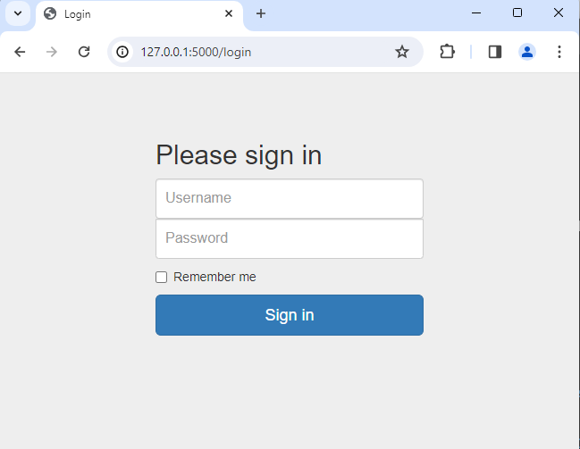
I deliberately chose the POST HTTP method for form submission rather than GET. Here's why:
GET would expose passwords in the browser's address bar and browser history—an unacceptable security risk.
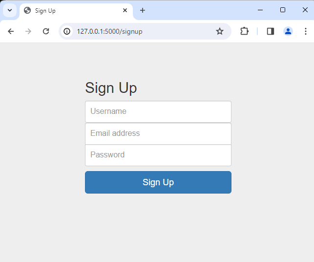
I used Jinja2 templating with WTForms integration to render forms securely:
{{ wtf.form_field(form.username) }}
{{ wtf.form_field(form.email) }}
{{ wtf.form_field(form.password) }}
Each wtf.form_field() expression renders the field with all validators and HTML attributes automatically applied. WTForms handles CSRF token generation and validation transparently.
I implemented the validate_on_submit() method to:
When validation succeeds, I extracted the form data and returned it to the user:
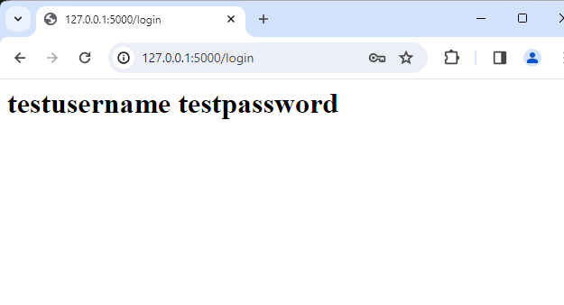
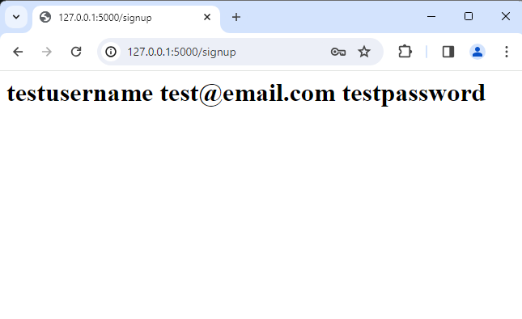
I implemented secure password hashing using Werkzeug's generate_password_hash() and check_password_hash() functions:
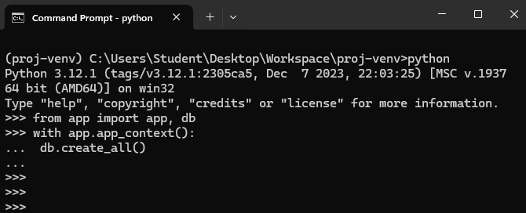
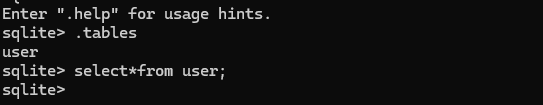
I verified the security of the implementation:
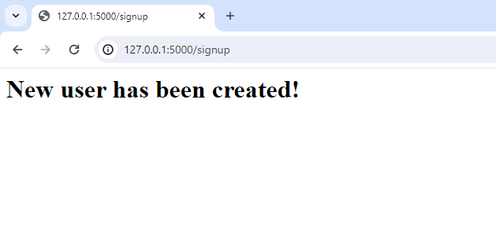
Hash Algorithm Used: pbkdf2:sha256
Sample Hashed Password: 72399361da6a7754fec986dca5b7cbaf1c810a28ded4abaf56b2106d06cb78b0
The PBKDF2 algorithm with SHA-256 provides: - Salting: Protects against rainbow table attacks - Key stretching: Makes brute force attacks computationally expensive - Industry standard: Used across major web frameworks and platforms
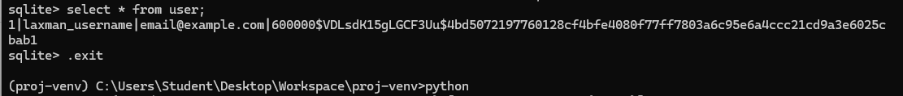
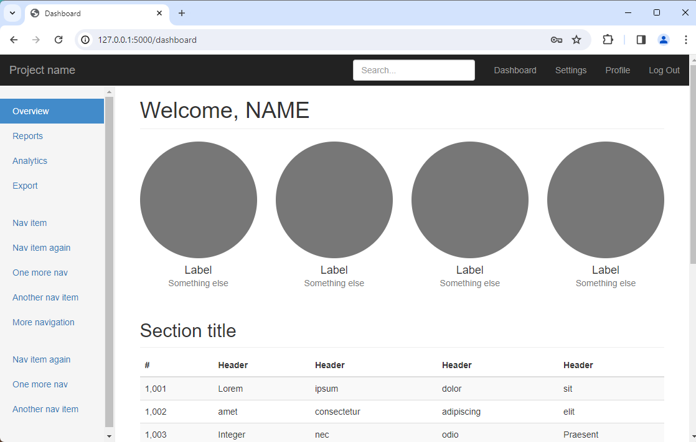
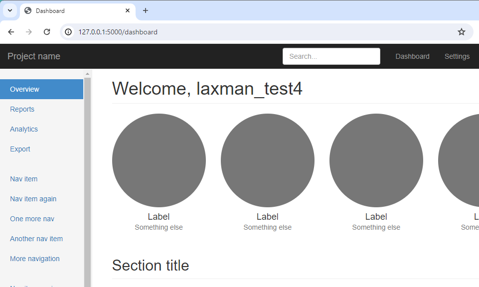
I implemented proper exception handling in the application startup:
if __name__ == '__main__':
try:
# Application runs in debug mode for development
app.run(debug=True)
except Exception as e:
# Catch and display any errors during startup
print("Something is Broken!")
print(e)
This ensures that database connection failures or other runtime errors are caught and logged appropriately.
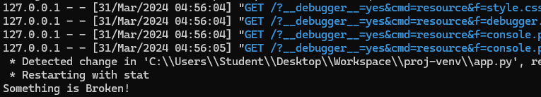
Through this project, I demonstrated: